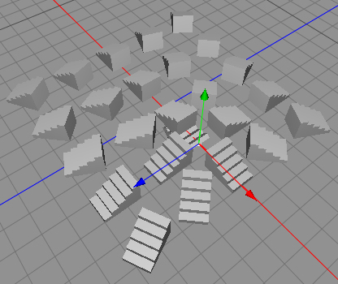

|
Orientation EffectorOrientation Force effector objects effect the rotational transformation of particles. This can be heading, bank or pitch or simply just the heading creating effects such a field full of particle flowers following the arc of the sun. Used in a scene with particles to create leaves blowing in the wind. Multiple effector types can be used to create even more complex behaviour.  Properties
|